Data visualisations
30+ bespoke interactive data visualisations for deep topical analysis
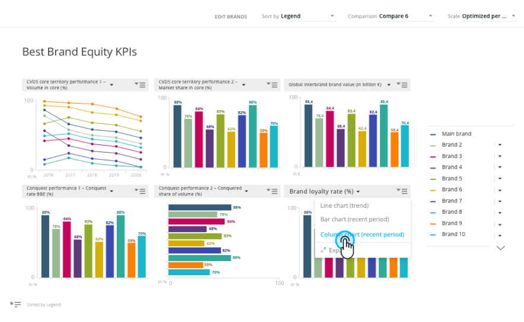
Overview
mTab ran a single tenant platform, which meant dedicated, branded analytics environments for big automotive names like Toyota, Mercedes-Benz, Stellantis and Volvo. At its core were two systems: Analyze (now Reports), a tool for customers to analyse data and build their own charts and reports from scratch, and Discover, a more guided analytical and reporting experience.
At the heart of Discover and Stories were mTab's bespoke data visualisations: a set of 30+ micro-applications, each one taking a slice of data and letting people turn it around to get at the insight faster. My team designed every one of those visualisations and the interactions inside them. We worked closely with Product, Data Solutions and the customers themselves to pin down what was actually needed, then stayed with Engineering through the build.
Challenge
The biggest challenge with custom data visualisation was the amount of data we needed to present on each screen, in limited space. On top of that, every client had their own data structures, studies, branding requirements and expectations, while the product underneath still had to stay consistent and maintainable.
Users ranged from seasoned researchers to business stakeholders who just needed a quick answer. On top of that, the interface for editing and customising slides had grown complex, creating friction for users who needed to make quick adjustments. Every visualisation also had to bend to each customer's corporate identity guidelines, so different colour palettes, different fonts and different amounts of space to work in.
My role
I coordinated the design team across multiple clients, with each visualisation treated as its own project. My role was to make sure designers stayed in contact with each other, exchanged ideas, and converged on shared solutions.
I introduced several initiatives to unify and simplify the design process for the data visualisations. We shared work in progress and ran regular design reviews within the team, then took the concepts to product managers and the data scientists on our team. When the concept was ready we had a design review with Engineering to estimate the work and prepare designs for handoff.
What the team was always working toward was a common way of interacting with and customising visualisations. Less unnecessary complexity, and shared patterns that held up across every type of chart we made. Later on, working closely with Engineering, we built a library of common data visualisation elements, patterns and components, which ended up as a subset of our overall design system.
Outcome
mTab's custom data visualisations became the main tool our clients used to find insights and create great market research reports. Reports was built for advanced users doing their own custom analysis, while the visualisations worked as a library of ready-to-go charts and analysis use cases, so the two tools complemented each other. Customers liked how rich and flexible the reporting was, and how much simpler the editing had become.
What's next
Most of the custom data visualisations are currently available to selected customers in Halo. The goal now is to modernise the technology behind them and use them as the basis for templates and ready-to-use visualisations in Reports.
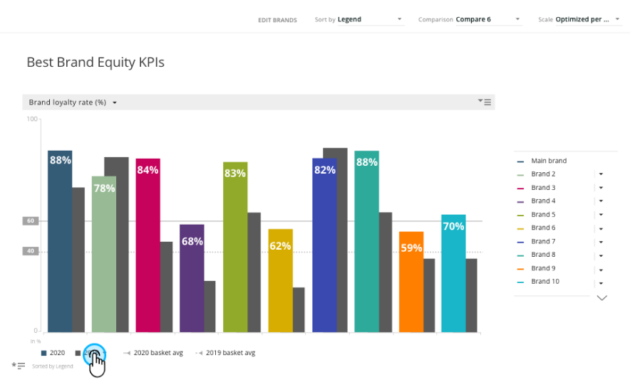
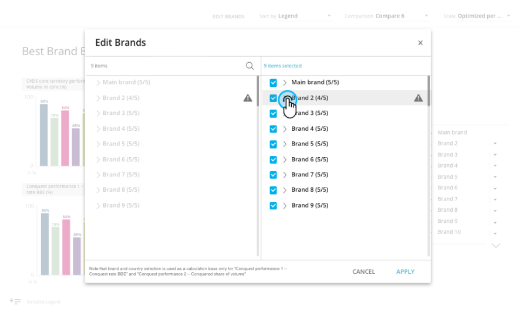
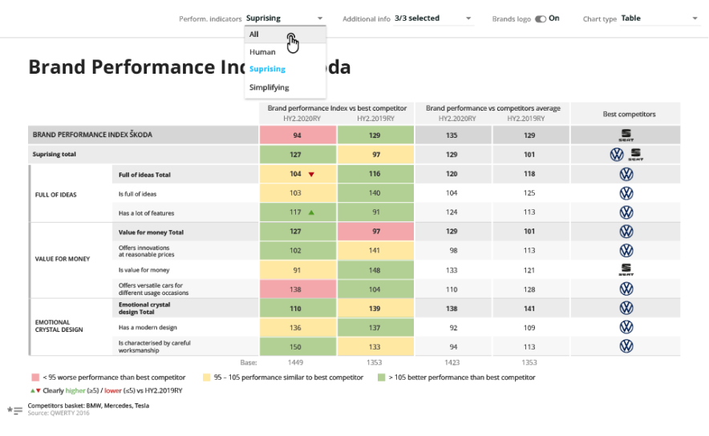
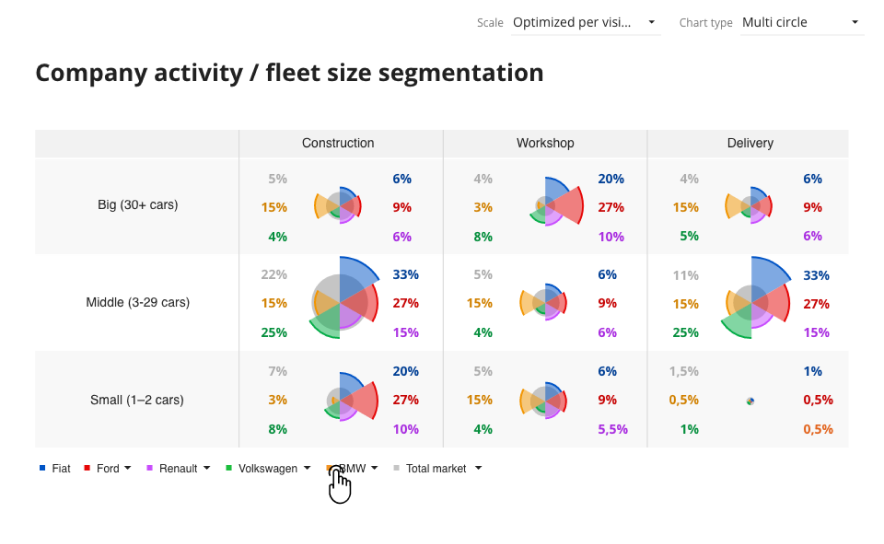
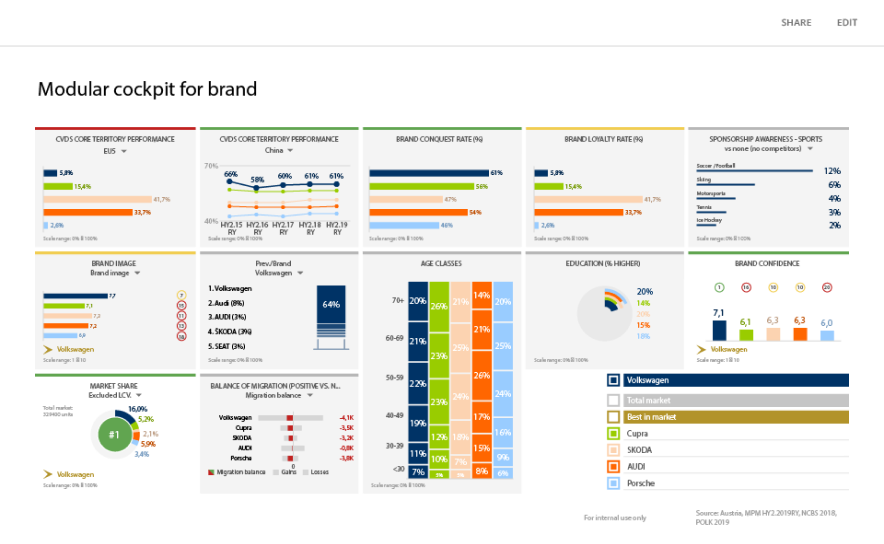
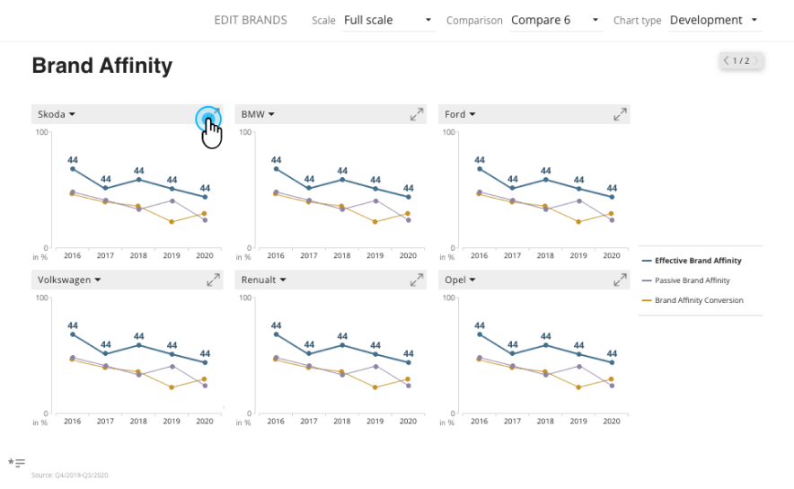
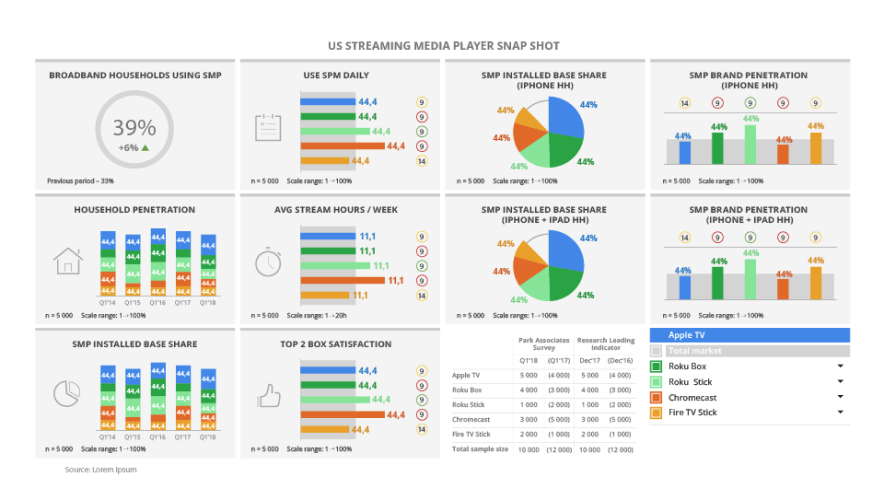
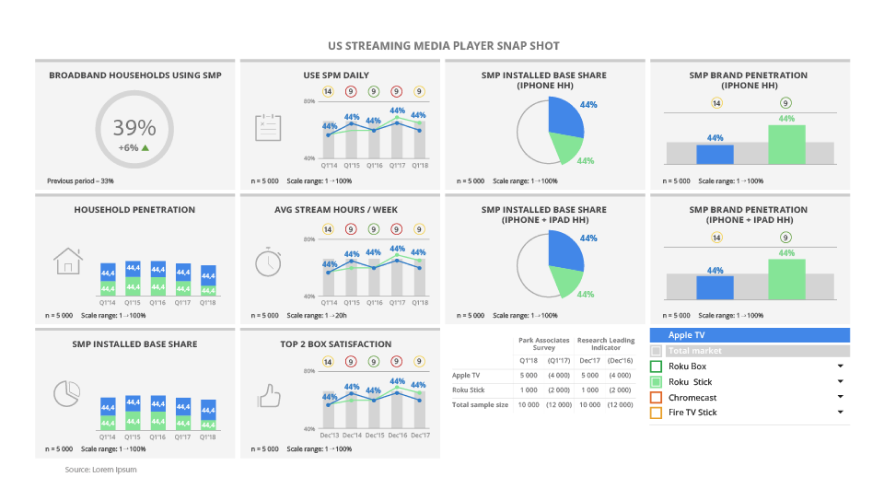
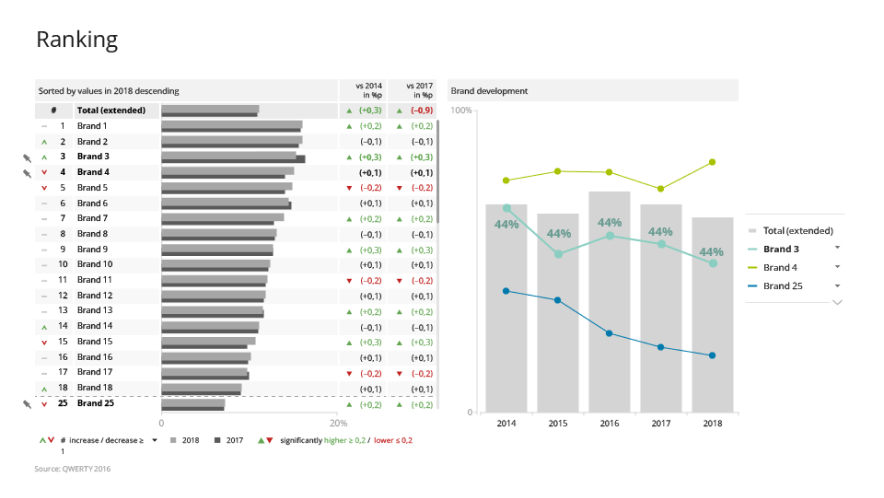
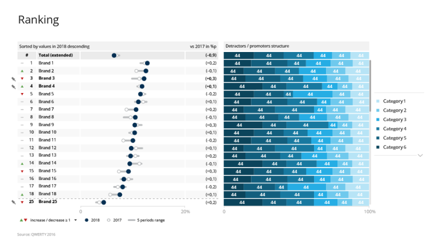
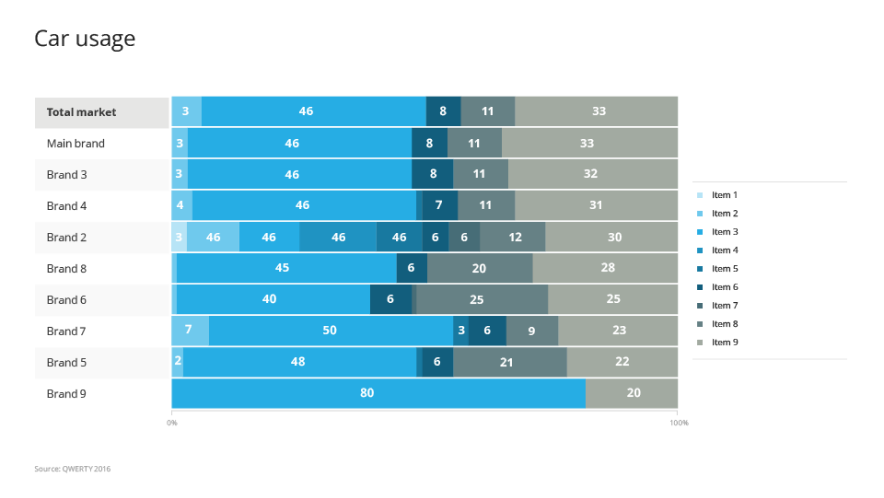
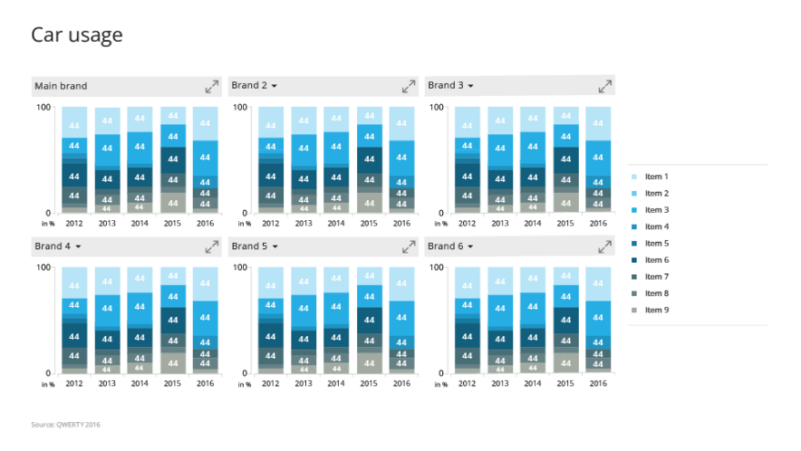
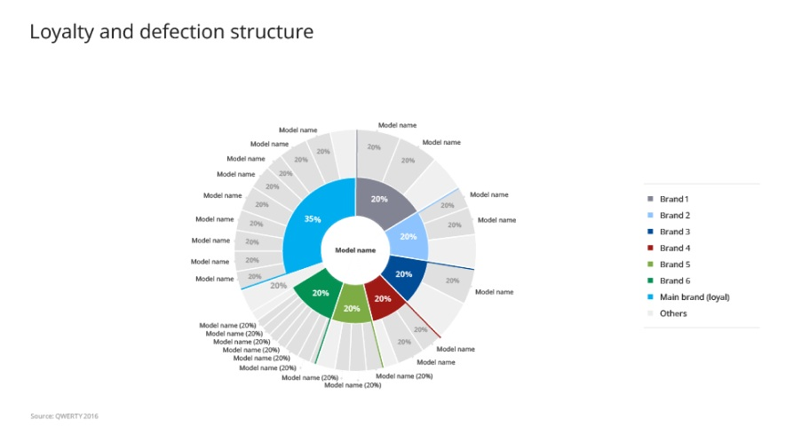
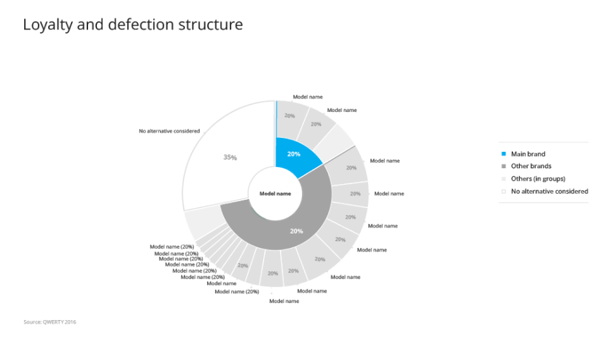
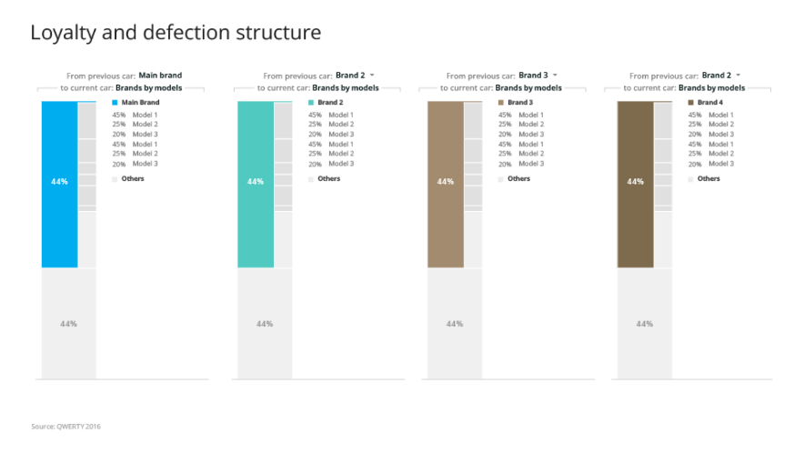
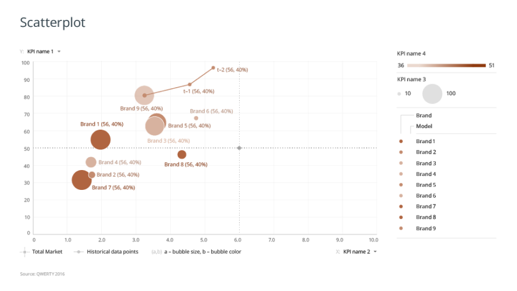
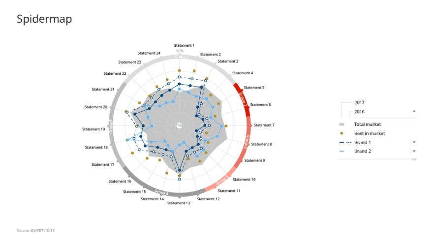
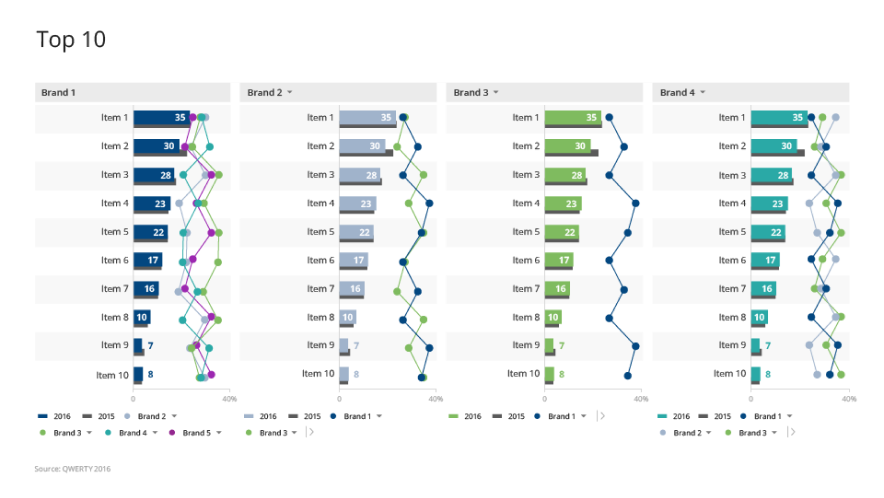
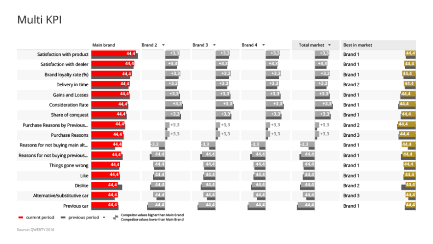